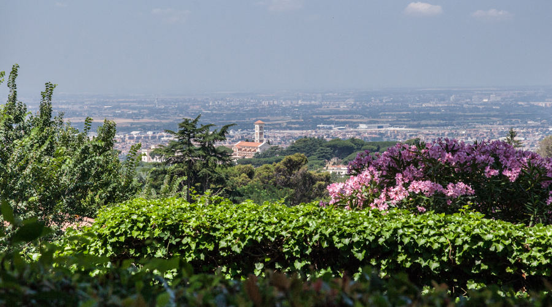

LOCANDA DEI CIOCCA
Via Anagnina, 134, 00046 Grottaferrata, RMRaffinata struttura immersa nel verde, tranquilla e discreta, con una splendida vista panoramica su Roma sul punto più in alto di Grottaferrata, la Locanda dei Ciocca mette a disposizione agli sposi e ai propri invitati le splendide terrazze dove gustare il banchetto su una delle più belle viste di Roma. La sua sala banchetti, aperta con ampie vetrate al verde circostante, è un ambiente elegante, ma che sa offrire un'atmosfera molto accogliente.
Claudio, primo chef della struttura, coadiuvato da uno staff di professionisti saprà come interpretare i gusti della coppia e degli invitati riservandogli raffinati buffet e menù. Il personale in sala sarà pronto ad occuparsi della cura delle mise en place, offrendo un ottimo servizio di accoglienza e assistenza.
